Blue Team : SIEM Cloud & Détection d'Attaques
Sécurité Cloud · Déploiement d'un pipeline de détection avec Amazon GuardDuty · Simulation de 3 scénarios d'attaque réels
Ce lab consiste à déployer une chaîne de détection et de réponse ("Blue Team") pour une infrastructure Cloud fictive SenBoutique en s'appuyant sur Amazon GuardDuty comme moteur de détection de menaces, relié à Amazon SNS via Amazon EventBridge pour une notification par email en temps réel. Le pipeline est ensuite validé par la simulation de 3 scénarios d'attaque réalistes : exposition publique d'un bucket S3 sensible, exfiltration de credentials IAM depuis une instance EC2 (vol de métadonnées IMDS), et communication avec un domaine de Command & Control connu.
Environnement
Trail sen-boutique-management-events
Détection GuardDuty (multi-source)
Routage EventBridge → SNS
Notification Email (temps réel)
Scénarios testés 3
Findings générés 6
Région eu-west-1 (Irlande)
Mise en Place du Pipeline de Détection
Le pipeline repose sur 4 briques AWS assemblées séquentiellement : une source d'audit (CloudTrail), un moteur de détection (GuardDuty), un routeur d'événements (EventBridge) et un canal de notification (SNS).
1. CloudTrail — Source d'audit
Un trail multi-région sen-boutique-management-events capture l'intégralité des appels API du compte et les archive dans un bucket S3 dédié. C'est la matière première que GuardDuty va analyser.
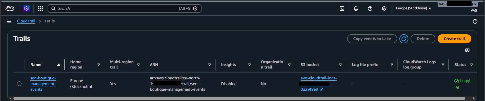
2. GuardDuty — Moteur de détection
GuardDuty est activé sur le compte. Il analyse en continu les logs CloudTrail, les VPC Flow Logs et les logs DNS pour détecter des comportements anormaux, sans agent à déployer.
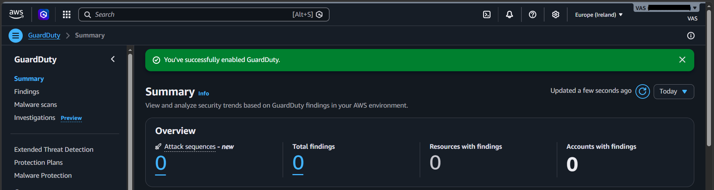
3. SNS — Canal de notification
Un topic SNS SenBoutique-Security-Alerts est créé, puis une souscription email est ajoutée et confirmée — c'est le point de sortie des alertes vers l'analyste.
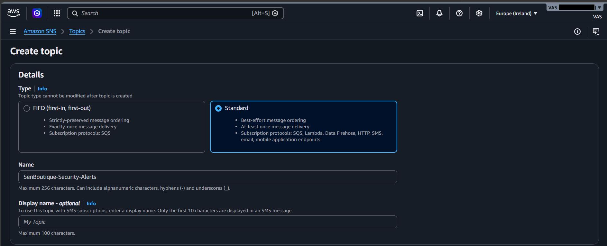
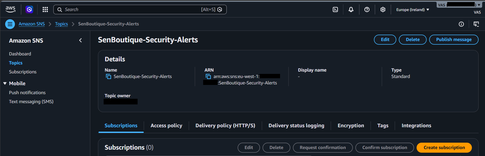
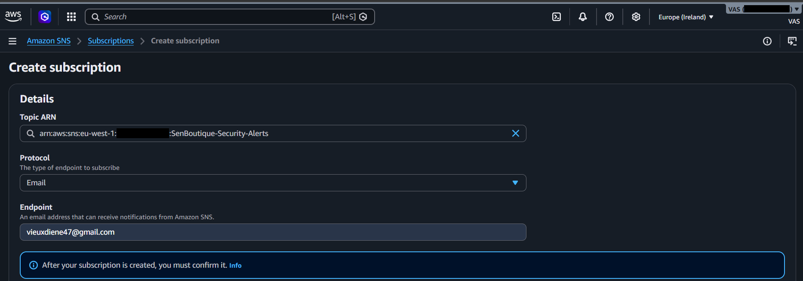
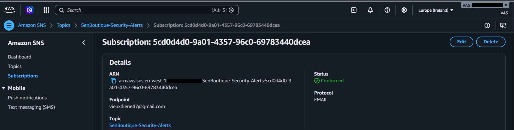
4. EventBridge — Routage des findings
Une règle EventBridge GuardDuty-To-SNS-SenBoutique intercepte tous les findings émis par GuardDuty et les publie automatiquement vers le topic SNS.
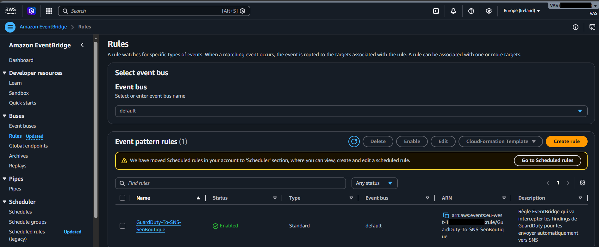
5. Validation de bout en bout
Un premier événement réel confirme que la chaîne fonctionne : une utilisation des identifiants root pour lister les rôles IAM (ListRoles) déclenche un finding GuardDuty, routé par EventBridge, et reçu par email via SNS.
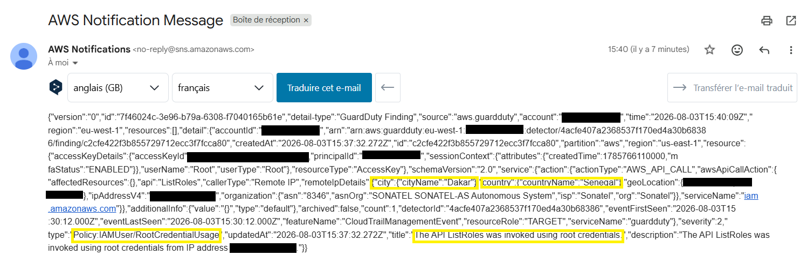
Pipeline validé : CloudTrail (logs) → GuardDuty (détection) → EventBridge (routage) → SNS (notification) → Email (analyste).
Architecture du Pipeline
Scénario 1 — Exposition Publique d'un Bucket S3
Un bucket S3 senboutique-dettes-clients-... contenant des données clients sensibles (montants dus, téléphones) est créé, puis sa politique est volontairement modifiée pour autoriser un accès public en lecture — simulant une erreur de configuration courante.
Création du bucket avec données sensibles
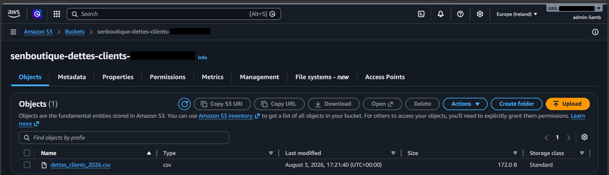
Modification de la bucket policy (exposition publique)
Le "Block Public Access" est désactivé et une policy PublicReadGetData avec Principal: "*" est appliquée.
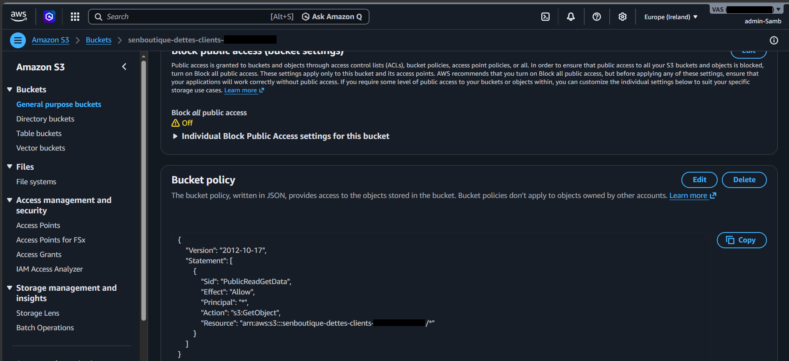
Détection — Finding LOW
GuardDuty détecte immédiatement la désactivation du blocage d'accès public.
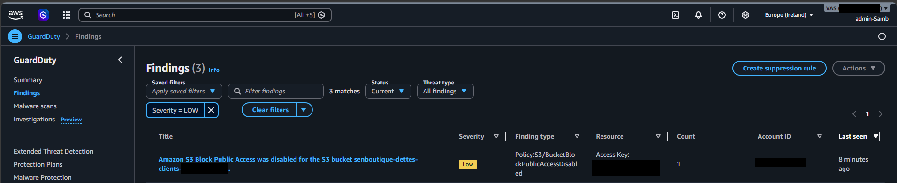
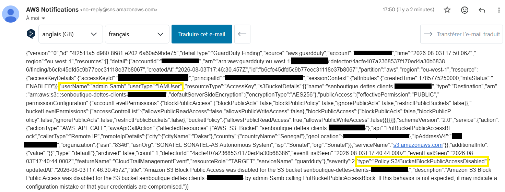
Escalade — Finding HIGH
Un second finding, de sévérité plus élevée, signale que l'accès anonyme est désormais effectivement accordé sur le bucket.
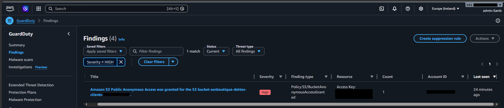
Preuve d'impact — Exfiltration sans authentification
Un simple curl, sans aucune clé d'accès, suffit à télécharger le fichier de données clients directement depuis l'URL publique du bucket.
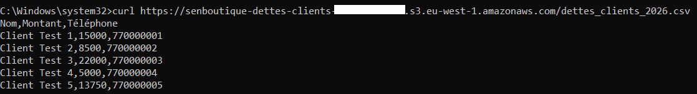
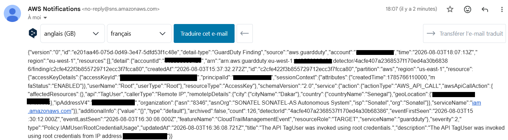
Résultat : GuardDuty a détecté les deux étapes de l'exposition (désactivation du blocage, puis accès anonyme accordé) avant même que l'exfiltration ne soit techniquement confirmée par le curl — démontrant l'intérêt d'une détection basée sur la configuration, en amont de l'exploitation.
Scénario 2 — Exfiltration de Credentials EC2 (IMDS)
Une instance EC2 senboutique-payment-backend est lancée avec un rôle IAM Role-EC2-PaymentBackend attaché. Le scénario simule un attaquant ayant obtenu un accès local à l'instance et qui exploite le service de métadonnées (IMDS) pour voler les credentials temporaires, puis les réutilise depuis une machine externe.
Instance EC2 avec rôle IAM attaché
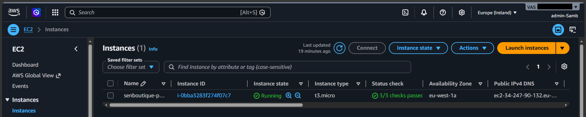
Vol des credentials via le endpoint de métadonnées
Depuis l'instance, une requête vers 169.254.169.254/latest/meta-data/iam/security-credentials/... restitue en clair l'AccessKeyId, la SecretAccessKey et le session Token du rôle attaché.
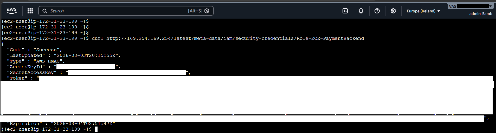
Réutilisation des credentials volés hors AWS
Les credentials sont injectés dans une session PowerShell sur une machine externe. aws sts get-caller-identity confirme l'assumed-role, puis aws s3 ls liste les buckets du compte — preuve que le rôle est pleinement exploitable en dehors de l'instance qui le détient légitimement.
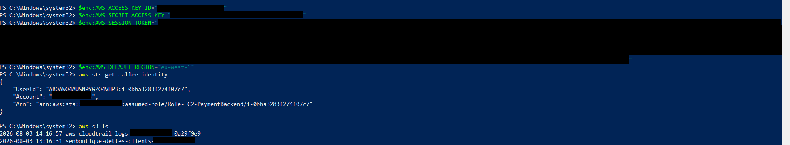
Détection — Finding HIGH
GuardDuty identifie que des credentials liés exclusivement à une instance EC2 sont utilisés depuis une adresse IP externe, hors de l'infrastructure AWS.
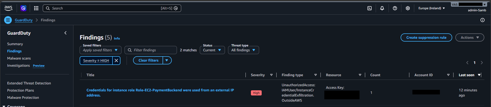
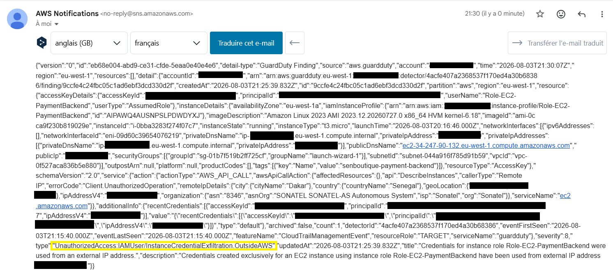
Résultat : le finding UnauthorizedAccess:IAMUser/InstanceCredentialExfiltration.OutsideAWS (sévérité 8/critique) illustre l'un des vecteurs SSRF/IMDS les plus documentés en environnement Cloud — GuardDuty corrèle la localisation géographique et l'origine réseau pour signaler une anomalie que les logs bruts, seuls, ne révéleraient pas facilement.
Scénario 3 — Communication avec un Domaine C2
Depuis la même instance EC2, une résolution DNS est effectuée vers un domaine associé à un serveur de Command & Control connu (guarddutyc2activityb.com — domaine de test officiel fourni par AWS pour valider la détection GuardDuty), simulant une communication de type beaconing d'un malware vers son infrastructure de contrôle.
Requête DNS suspecte
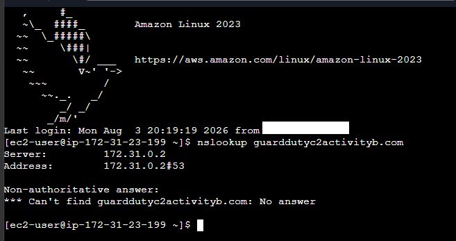
Détection — Finding HIGH
GuardDuty croise la requête DNS avec sa base de renseignement sur les menaces (threat intelligence) et identifie le domaine comme un serveur C2 connu.
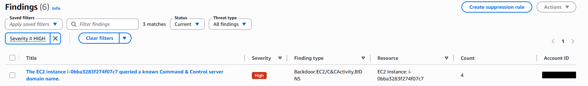
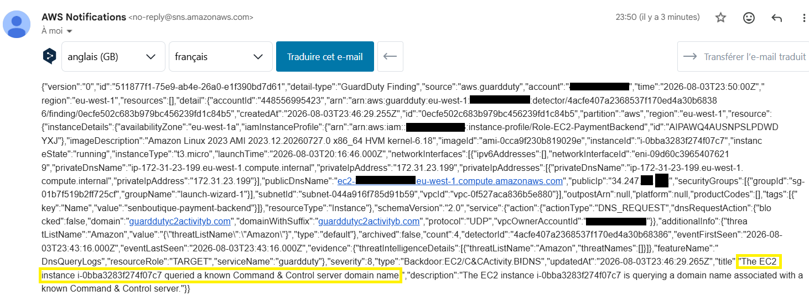
Résultat : le finding Backdoor:EC2/C&CActivity.B!DNS confirme la capacité de GuardDuty à détecter un comportement de type malware/backdoor par simple corrélation avec ses listes de threat intelligence, sans nécessiter d'analyse de payload ou d'agent sur l'instance.
Synthèse des Findings GuardDuty
Au total, 6 findings ont été générés au cours des 3 scénarios, couvrant un spectre représentatif des menaces Cloud courantes :
| Scénario | Finding type | Sévérité | Description |
|---|---|---|---|
| 1 — S3 public | Policy:S3/BucketBlockPublicAccessDisabled | Low | Désactivation du blocage d'accès public sur le bucket |
| Policy:S3/BucketAnonymousAccessGranted | High | Accès anonyme en lecture accordé sur le bucket | |
| 1 — (bruit) | Policy:IAMUser/RootCredentialUsage | Low | Utilisation des identifiants root pendant la fenêtre de test |
| 2 — IMDS EC2 | UnauthorizedAccess:IAMUser/InstanceCredentialExfiltration.OutsideAWS | High (8) | Credentials d'instance EC2 utilisés depuis une IP externe |
| 3 — DNS C2 | Backdoor:EC2/C&CActivity.B!DNS | High | Résolution DNS vers un domaine de Command & Control connu |
Dans chaque cas, le délai entre l'action malveillante et la réception de l'alerte email a été de l'ordre de quelques minutes, confirmant la réactivité du pipeline EventBridge → SNS pour une détection quasi temps réel.
Nettoyage et Restitution des Ressources (Teardown)
Pour éviter toute surfacturation et garantir la sécurité post-projet, l'ensemble des composants déployés lors de la simulation a été méthodiquement supprimé.
| Composant / Service | Action effectuée | Statut |
|---|---|---|
| Instances EC2 | Résiliation et destruction des instances de test | Terminated |
| Security Groups | Suppression des règles d'accès et des groupes associés | Deleted |
| Buckets S3 | Vidage complet des logs CloudTrail et suppression des buckets | Deleted |
| Clés d'accès & Rôles IAM | Révocation des Access Keys et suppression des rôles temporaires | Revoked / Deleted |
| GuardDuty | Désactivation du service de détection d'intrusions | Disabled |
| EventBridge & SNS | Suppression des règles de routage et des topics de notification | Cleaned |
Note de sécurité : le nettoyage a été validé par la vérification des journaux CloudTrail, confirmant l'absence de ressources résiduelles actives sur le compte AWS.
Conclusion
Ce lab démontre la mise en place complète d'une capacité de détection Cloud de type Blue Team, entièrement managée et sans agent : GuardDuty analyse en continu les sources de logs AWS existantes (CloudTrail, VPC Flow Logs, DNS), tandis qu'EventBridge et SNS assurent une notification quasi instantanée vers l'analyste. Les 3 scénarios simulés — mauvaise configuration S3, vol de credentials via IMDS, et communication C2 — couvrent des vecteurs d'attaque réels et fréquemment rencontrés en environnement Cloud, chacun détecté et documenté de bout en bout, de l'action malveillante jusqu'à la preuve d'exploitation et l'alerte reçue.